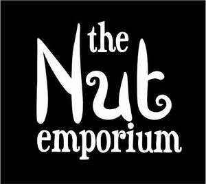

Trade Mark Journal No.2025/013 28 March 2025
UK00004174014 14 March 2025 (29,30,31)
Mark 1
THE NUT EMPORIUM
Mark 2

- Class 29
- Candied nuts; Roasted nuts; Salted nuts; Blanched nuts; Dried nuts; Nuts being dried; Spiced nuts; Edible nuts; Candied pine nuts; Shelled nuts; Flavoured nuts; Cashew nuts (Prepared -); Flavored nuts; Roast nuts; Prepared macadamia nuts; Nuts being cooked; Prepared pine nuts; Ground nuts; Processed nuts; Seasoned nuts; Prepared nuts; Nuts, prepared; Mixtures of fruit and nuts; Processed betel nuts; Preserved nuts; Nuts being preserved; Butter made of nuts; Processed tiger nuts; Pastes made from nuts; Prepared torreya nuts; Cashew nut butter; Nut toppings; Nut oils; Powdered nut butters; Butter (Chocolate nut -); Chocolate nut butter; Processed fruits, fungi, vegetables, nuts and pulses; Candied walnuts; Snack foods based on nuts; Snack mixes consisting of dehydrated fruit and processed nuts; Nut and seed-based snack bars; Nut oils for food; Organic nut and seed-based snack bars; Snack mixes consisting of processed fruits and processed nuts; Salted cashews; Nut paste spreads; Roasted peanuts; Coated peanuts; Raisins; Canned peanuts; Honeyed peanuts; Prepared walnuts; Walnuts, prepared; Candied fruits; Candied fruit snacks; Candied fruit; Dried fruit; Dried fruits; Dried fruit products; Dried fruit mixes; Vegetables, dried; Dried vegetables; Dried mangoes; Dried strawberries; Dried blueberries; Dried pineapples; Prepared dried fruit mixes; Dried longan; Fruit, stewed; Stewed fruit; Dried durians; Dried lichee; Dried cranberries; Dried pawpaws; Dried figs; Dried coconuts; Sliced fruit; Dried fruits in powder form; Dried fruit-based snacks; Dried olives; Edible dried flowers; Edible flowers, dried; Processed lychee fruit; Crystallized fruit; Powdered fruits; Frozen fruits; Fruit rinds; Crystallised Fruit; Fruit peel; Peel (Fruit -); Fruit, processed; Canned sliced fruits; Fermented fruits; Dried edible seaweed; Dried edible mushrooms; Tinned fruits; Fruits, tinned; Cooked fruits; Aromatized fruit; Canned fruits; Fruits, canned; Fruit pulp; Pulp (Fruit -); Edible crystallized fruits; Pickled fruits; Fruit, preserved; Fruit Powders; Fruit leathers; Dried lentils; Fruit marmalade; Fruit snacks; Fruit salads; Edible seeds; Edible sunflower seeds; Processed edible seeds; Dried edible daylilies; Sunflower seeds, prepared; Edible oils; Seeds (Processed sunflower -); Processed sunflower seeds; Processed edible flowers; Edible crystallised fruits; Processed plantain seeds; Dried truffles [edible fungi]; Processed pumpkin seeds; Processed watermelon seeds; Dried edible algae; Edible seaweed; Prepared watermelon seeds; Edible oil; Edible fats; Linseed oils [edible]; Processed chia seeds; Pumpkin seed oil for food; Processed seeds; Seeds (Processed -); Snacks of edible seaweed; Seeds, prepared; Cooked sesame seeds, not being seasonings or flavorings; Edible oils for use in cooking foodstuffs; Processed edible cordyceps; Chia seed oil for food; Camellia seed oil for food; Edible oils for glazing foodstuffs; Processed, edible seaweed; Processed edible seaweed; Processed chia seed for food; Dried edible seaweed (hoshi-wakame); Tahini [sesame seed paste]; Seed butters; Lotus seed paste; Sunflower oil for food; Sunflower oil [for food]; Flaxseed oil for food; Guava paste; Coconut butter; Coconut powder; Coconut chips; Coconut flakes; Shredded coconut; Coconut milk [beverage]; Dried persimmon (Got-gam); Dried beans; Dried bamboo fungus; Edible dried gardenia flowers; Yellow morels, dried; Dried soya beans; Dried shiitake mushrooms; Oyster mushrooms, dried; Dried edible black fungi; Dried Chinese yams; Dried funghi; Dried okra; Berries, preserved; Dried turnip; Dried chinese cabbage; Cranberry compote; Peach flakes; Fruit- and nut-based snack bars; Nut-based food bars; Nut-based meal replacement bars; Soy-based food bars; Nut-based snack foods; Fruit-based meal replacement bars; Fruit-based snack food; Snack food (Fruit-based -); Tofu-based snack food; Cheese-based snack foods; Potato snack foods; Potato-based snack foods; Vegetable-based snack food; Potato crisps in the form of snack foods; Vegetable-based snack foods; Soy-based snack foods; Fruit based snack foods; Meat-based snack foods; Coconut-based snacks; Tofu-based snacks; Potato snacks; Milk-based snacks; Sesame oil; Crushed sesame; Rice bran oil for food; Chilli oil; Groundnut oil; Ground almonds; Almonds, ground; Processed almonds; Prepared almonds; Almonds (Prepared -); Processed walnuts; Ground almond; Almond butter; Prepared pistachios; Processed apricots; Hazelnuts, prepared; Infused raisins; Pecans, prepared; Almond oil for food; Cooked olives; Sultanas; Cacao butter for food; Currants; Processed chickpeas; Coconut milk; Peanuts, processed; Processed peanuts; Peanuts, prepared; Peanut butter; Peanut paste; Peanut milk; Butter (Peanut -); Olives stuffed with red peppers and almonds; Soya beans, preserved, for food; Soya chips; Chilli beans; Banana chips.
- Class 30
- Chocolate-covered nuts; Chocolate-coated nuts; Gingerbread nuts; Chocolate coated macadamia nuts; Chocolate coated nuts; Sugar coated pine nuts; Coated nuts [confectionery]; Caramel coated popcorn with candied nuts; Sauces flavoured with nuts; Sauces containing nuts; Chocolate spreads containing nuts; Nut flours; Sweet rice with nuts and jujubes (yaksik); Sandwich spread made from chocolate and nuts; Chocolate drink preparations flavoured with nuts; Nut confectionery; Snack bars containing a mixture of grains, nuts and dried fruit [confectionery]; Sugared almonds; Sugar almonds; Crackers flavoured with fruit; Almonds covered in chocolate; Chocolate coated fruits; Oat clusters containing dried fruit; Food mixtures consisting of cereal flakes and dried fruits; Fruit breads; Fruit bread; Fruit sugar; Fruit infusions; Edible spices; Edible flour; Sesame seeds [seasonings]; Edible salt; Sauce [edible]; Processed seeds for use as a seasoning; Processed seeds used as a flavoring for foods and beverages; Edible rice paper; Poppy seeds for use as a seasoning; Poppy seed pastry; Table salt mixed with sesame seeds; Coulis (Fruit -) [sauces]; Chocolate-coated berries; Cereal-based snack bars; Cereal bars and energy bars; Cereal bars; Candy bars; Muesli bars; Chocolate bars; Chocolate-coated bars; Confectionery bars; High-protein cereal bars; Cereal-based bars; Oat bars; Chocolate-based bars; Sesame candy bars; Cake bars; Chocolate-based ready-to-eat food bars; Fruit ice bars; Chocolate-based meal replacement bars; Filled chocolate bars; Milk chocolate bars; Cereal-based meal replacement bars; Cereal based food bars; Cereal-based snack food; Snack food (Cereal-based -); Ready-to-eat cereal-derived food bars; Ice milk bars; Cereal snacks; Cereal snack foods flavoured with cheese; Sweets (candy), candy bars and chewing gum; Cereal based snack foods; Grain-based snack foods; Wheat-based snack foods; Cereal based energy bars; Chocolate coated nougat bars; Rice-based snack foods; Crispbread snacks; Rice-based snack food; Snack food (Rice-based -); Snack foods made from cereals; Corn-based snack foods; Multigrain-based snack foods; Snack foods made from wheat; Snack foods made of wheat; Snack foods made from corn; Tortilla snacks; Snack food products made from cereals; Snack food products made from cereal flour; Snacks manufactured from muesli; Snack food products made from cereal starch; Fruit cake snacks; Cereal based prepared snack foods; Snacks made from muesli; Cereal products in bar form; Snack foods prepared from maize; Cereal-based savoury snacks; Snack foods made from corn and in the form of rings; Snack products made of cereals; Snack food products consisting of cereal products; Muesli desserts; Roasted and ground sesame seeds for use as a seasoning; Sesame paste; Sesame confectionery; Cereal seeds, processed; Sweetmeats made of sesame oil; Sweetmeat made of sesame oil; Vegetable flavoured corn chips; Corn kernels being roasted; Almond flour; Flavourings of almond; Almond confectionery; Almond paste; Caramelised sugar; Marzipan; Chocolate vermicelli; Peanut butter confectionery chips; Peanut confectionery; Corn, roasted; Roasted corn; Peanut sauce; Corn kernels being toasted; Toasted corn kernels; Rice crisps; Corn candy; Corn chips; Peanut brittle; Caramel-coated popcorn; Rice crackers; Maize, roasted; Roasted maize; Caramel popcorn; Fried corn; Candy coated popcorn; Seaweed flavoured corn chips; Caramel coated popcorn; Chocolate-coated rice cakes; Kettle corn [popcorn]; Salt for popcorn; Puffed corn snacks; Candy coated apples; Candy with cocoa; Chocolate coated marshmallow biscuits containing toffee; Corn flour [for food]; Extruded corn snacks; Dried sugared cakes of rice flour (rakugan); Processed unpopped popcorn; Candy-coated popcorn; Puffed cheese balls [corn snacks]; Chocolate bark containing ground coffee beans; Cheese flavored puffed corn snacks; Cocoa [roasted, powdered, granulated, or in drinks]; Senbei (rice crackers).
- Class 31
- Nuts [fruits]; Raw nuts; Unprocessed nuts; Nuts, unprocessed; Fresh cashew nuts; Nuts being fresh; Edible seeds [unprocessed]; Unprocessed flax seeds; Seeds; Sunflower seeds; Flax [linseed] plants; Hemp seeds, unprocessed; Wheat seed; Seeds for fruit; Fruit seeds; Unprocessed chia seeds; Vegetable seeds; Unprocessed seeds; Peanut meal for animals; Betel nuts, fresh; Raw nut kernels; Fresh cashew apples; Fresh pistachio nuts; Edible nuts [unprocessed]; Cola nuts; Fresh ginkgo nuts; Cocoa beans (Unprocessed -); Fresh gingko nuts; Fresh pecans; Fresh soya beans; Fresh soy beans; Raw corn.
ANGLO EUROPEAN COMMODITY BROKERS LIMITED